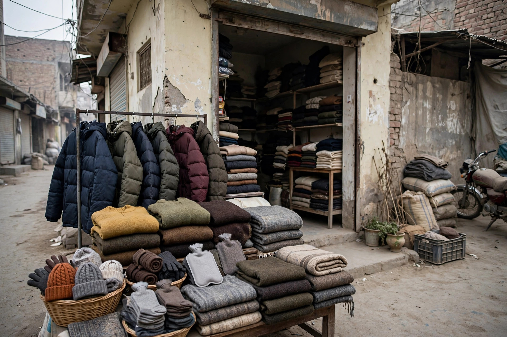

Look at What Winter Changes for Your Customers
Winter does not change what your business sells, but it often changes when and how customers reach you. People may leave home later in the morning, prefer to call before visiting, or search online first to check whether a shop is open. Some customers plan purchases in advance, while others need something urgently on a cold day and want a quick answer. Thinking about these small changes helps you prepare without making big changes to your business.
It also helps to notice which questions come up again and again in winter. Customers may ask about timings, delivery, availability, repair services or seasonal items. If you write down the most common questions for a week, you will have a clear list to answer on your website, your business profile and in person. Clear answers save time for both you and the customer, and they reduce missed calls and wasted visits.

Check Your Basic Information Before the Season Starts
Before winter gets busy, check that your business information is correct everywhere customers may look. Your address, phone number, opening hours and services should match on your website and your Google Business Profile. If anything has changed, update it in one place first and then check the other places where it appears. Small mistakes, such as an old phone number, can cause a lost customer in winter when people are less willing to travel without confirming first.
Also check that your contact details are easy to use on a phone. Many customers will search on mobile while they are out or at home, so a phone number that can be tapped and an address that can be followed on a map make a real difference. If your business offers a service at the customer's home or place of work, say so clearly. Customers should not have to guess what you offer or where you offer it.
It is also wise to check that winter contact details work in practice, not only on paper. Call your own number, open your profile on a phone, and follow the directions to your address as a customer would. If a link fails, a number is hard to tap, or directions lead to the wrong place, fix it before customers face the same problem. This short test takes only a few minutes, but it can prevent lost visits on busy winter days when customers have little patience for confusion or extra searching.
Prepare Your Shop, Stock and Services
Winter preparation is mostly about being ready for normal demand, not about guessing at large changes. Review the items and services customers usually ask for in colder months and make sure you can explain what is available, what needs to be ordered and how long a job may take. If an item is out of stock, it is better to say so honestly and offer a clear alternative or a realistic time to arrange it. Honest information builds trust, especially when customers are planning around family and work routines.
It is also useful to prepare your physical space for winter visitors. Keep the entrance clear, make sure lighting is working, and keep walkways safe and easy to use. Inside, customers appreciate a tidy space where they can ask questions without feeling rushed. These simple steps cost little, but they shape how a customer remembers a visit and whether they return or recommend your business to others.
Make Winter Content Simple and Useful
Useful winter content does not need to be long or fancy. A short post or page that explains how to prepare, what to check before buying, or how to look after a product in winter can answer real questions. Focus on one clear topic at a time, use simple language, and end with a clear next step, such as calling for advice or visiting during opening hours. Customers value guidance that respects their time and does not push them towards a decision they are not ready to make.
When you write, avoid vague claims and stick to what you actually offer. Explain the steps involved, what the customer should bring or prepare, and what questions they can ask. This kind of content also helps online, because it matches the words customers use when they search. Over time, a set of honest, helpful pages can make your business easier to find for the exact problems people face in winter.
Plan for Busy Days and Quiet Days
Winter business is rarely steady from week to week. Some days may be quiet, while others bring several customers at once. A simple plan helps you handle both. On quiet days, use the time to update information, tidy stock, follow up with customers who asked a question, and prepare answers for common winter queries. On busy days, keep the focus on clear service, short waiting times and honest updates if a job will take longer than expected.
Planning also means looking after the people who run the business. Cold weather, early darkness and long days can be tiring, so keep routines realistic and avoid promising a same-day service you cannot deliver. If you need more time, say so early and give the customer a choice. Most customers accept a delay when it is explained clearly, but they lose trust when they are given a promise that is later broken without explanation.
A simple winter checklist can help staff and family members who help run the business stay consistent. Write down opening hours, common winter services, and what to say if a job is delayed. Keep the list where it can be seen easily, and update it when something changes. When everyone gives the same clear answer, customers feel the business is organised, even on a hectic day. Consistency in small details often matters more than a large winter promotion.
Keep Communication Clear All Winter
Good winter preparation ends with good communication. Answer phone calls politely, reply to messages when you can, and keep customers informed if anything changes. If your hours change for a particular day, update your profile and inform customers who may be affected. If a service is delayed by weather or supply, a short honest message is far better than silence. Customers remember how a business communicates in difficult moments.
Finally, ask customers at the end of winter what worked well and what could improve. Their answers can guide your planning for next year and show you which services mattered most. Keep notes, update your website and profile with what you learned, and thank customers for their support. A business that listens in winter is well placed to grow in spring, because trust built in a quiet season often lasts far longer than a single sale.
Frequently Asked Questions
When should a Layyah business start preparing for winter?
Start a few weeks before colder weather becomes regular, so you have time to check information, stock and services without rushing.
What is the most important winter update for a small business?
Make sure your phone number, address, hours and services are correct and easy to find on your website and business profile.
Should a business change its services for winter?
Not necessarily. Focus on explaining existing services clearly and preparing for the winter questions customers ask most often.
How can Zaheer Seo Expert help a Layyah business online?
Zaheer Seo Expert, based in Layyah, can help a business present its services clearly online so local customers can find and contact it easily.
Want More Customers From Google?
Call 0327 7350830 or email seozaheer14@gmail.com. Zaheer Seo Expert, Layyah - Rajan Shah Road, Rana Nagar, Chak 116 TDA, Pakistan. Open 24 hours.
Get Your SEO Strategy →